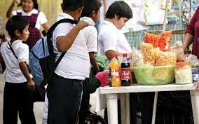

El tema de la obesidad infantil en México, es un tema que tiene mucha
relevancia, ya que México ocupa el primer lugar en el mundo en
obesidad infantil, los niños y las niñas no realizan ejercicio o una
actividad física, o en las escuelas no vende comida saludable, por el cual
con el apoyo de una escuela que esta cerca de mi comunidad se
pretenden tener como propósito que los niños y sus padres tengan
platicas con nutriólogos sobre como llevar una alimentación mas
saludable y que sepan los riesgos y enfermedades que los niños pueden
tener y sufren de obesidad, tener el apoyo de los maestros de educación
física para que los menores realicen alguna actividad física, buscar el
apoyo del director para que en la escuela vendan comida mas sana a la
hora del recreo.
Las niñas y los niños con obesidad tienen más probabilidades de padecer:
Presión arterial y colesterol alto, esto conlleva a una enfermedad
cardiovascular, mayor riesgo de intolerancia a la glucosa, resistencia a la
insulina y diabetes tipo 2 además de ser propensos a ser adultos obesos,
problemas respiratorios como asma y apnea de sueño, enfermedades del
hígado. También es importante señalar que la obesidad infantil esta
directamente relacionada con problemas como la ansiedad y depresión, baja
autoestima y problemas sociales como el bullying, que si nada de esto se trata
desde el comienzo se puede llegar al suicidio. Los niños y las niñas no realizan
ejercicio o una actividad física, o en las escuelas no vende comida saludable y
no se realizan platicas de como llevar una alimentación mas saludable y no se
conocen los riesgos y enfermedades que causan el tener obesidad y más
cuando se presenta en la infancia.